二〇二一年十一月二十六日
2021.11.25
重要なお知らせ
- 請勿攜帶寵物入山
- 對於輪椅使用者
更新情報
-
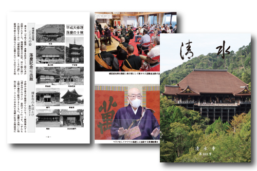
2021.10/27
季刊誌『清水』第223号が発
-
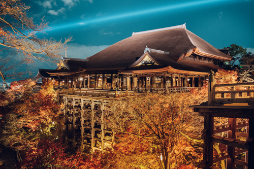
2021.10 / 8
2021.11 / 18-11 / 30 實施特別參觀Jojuin花園
-
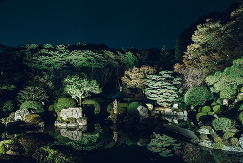
2021.10 / 8
2021.11 / 18-11 / 30 實施特別參觀Jojuin花園
-
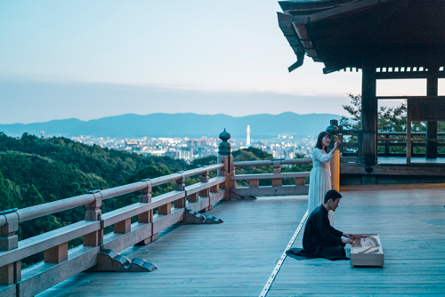
2021.10/4更新
FEEL KIYOMI ZUDERA“絲綢
專刊
-
字跡中的先人情懷
Ryokei Osho 的個性，這本書 -
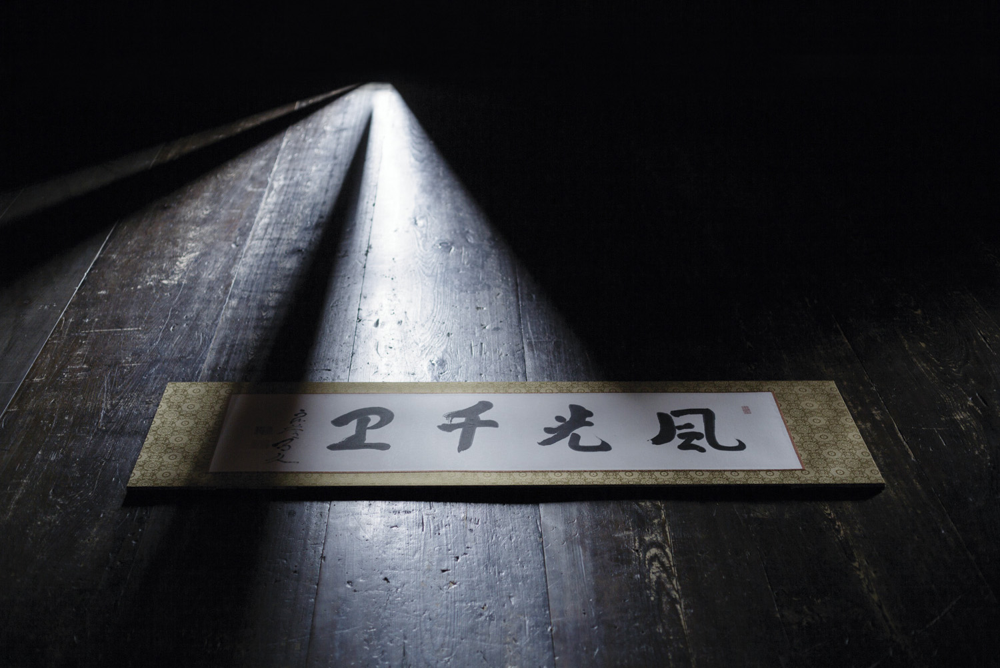
字跡中的先人情懷
書法和清水寺。 -
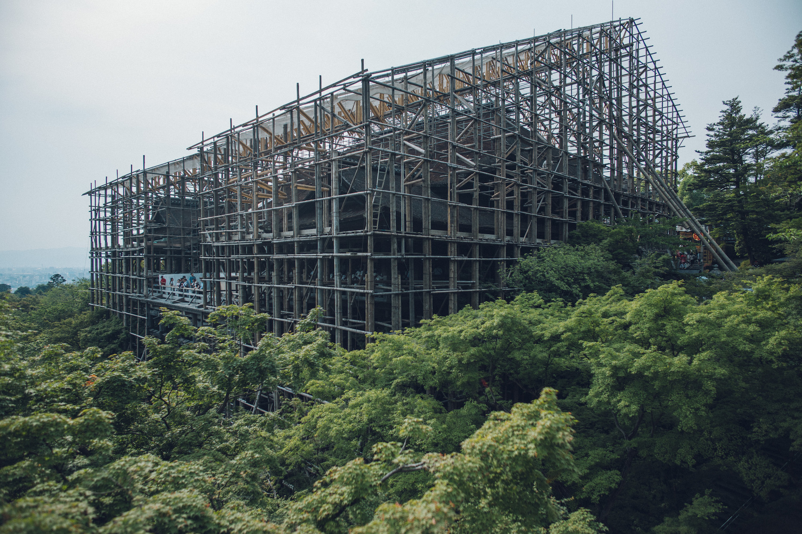
覆膜時間～來自主廳施工現場～
400 年至今，400 年後。 -
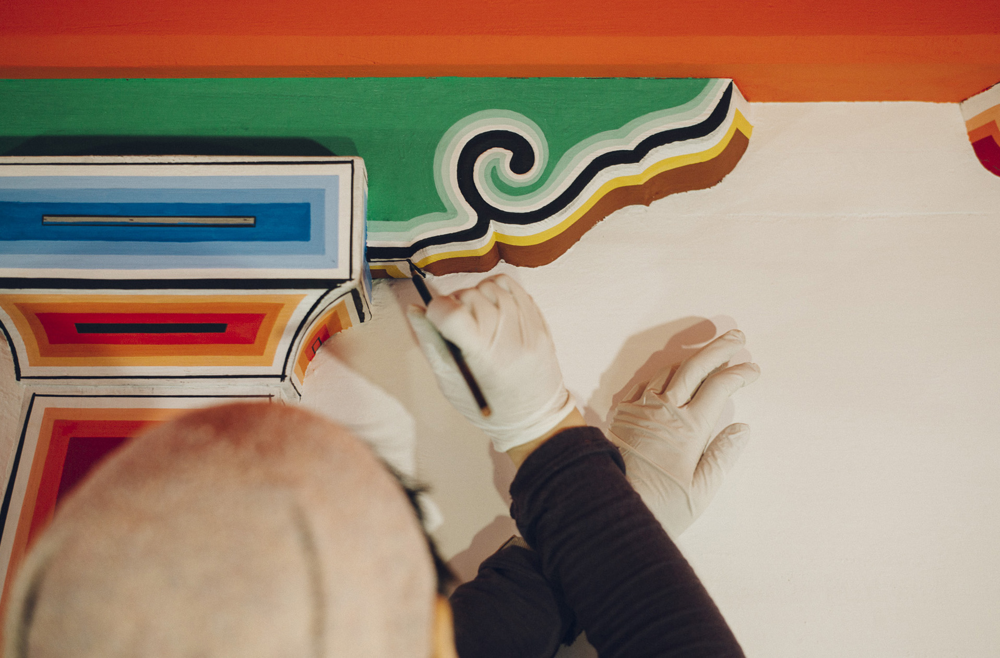
覆膜時間～來自主廳施工現場～
過去和現在相結合的修復
指導

 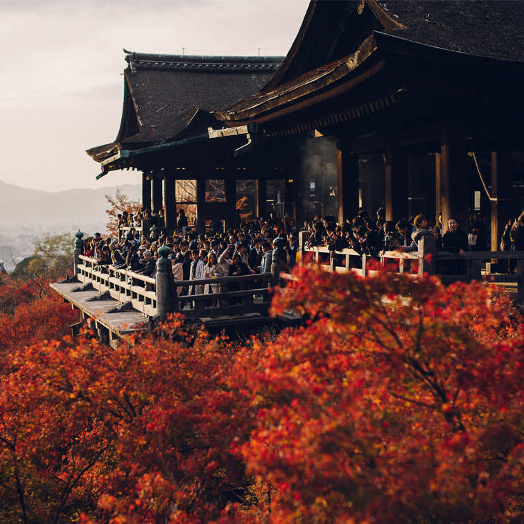
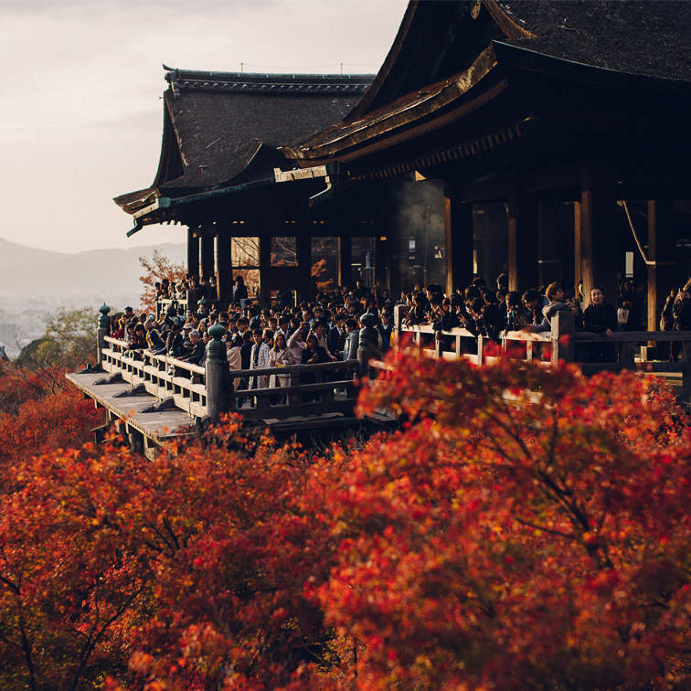
境内案内
我們將向您展示分佈在東山和音葉山的區域的亮點。您可以在包括國寶和重要文化財產在內的 15 座寺廟中看到時間的積累。

清水寺的歷史
清水寺始建於778年。1200 多年的歷史在廣闊的區域內隨處可見。

崇拜信息
有關開門和關門時間的信息。時間根據季節和活動而有所不同，因此請在訪問前確認。
信件（更新信息）
我們會在此通知您活動日程等最新信息。

交通指南
乘坐公共交通工具和汽車遊覽山的信息。它還提供所需時間的估計。
常問問題
以下是一些常見問題。
-
-
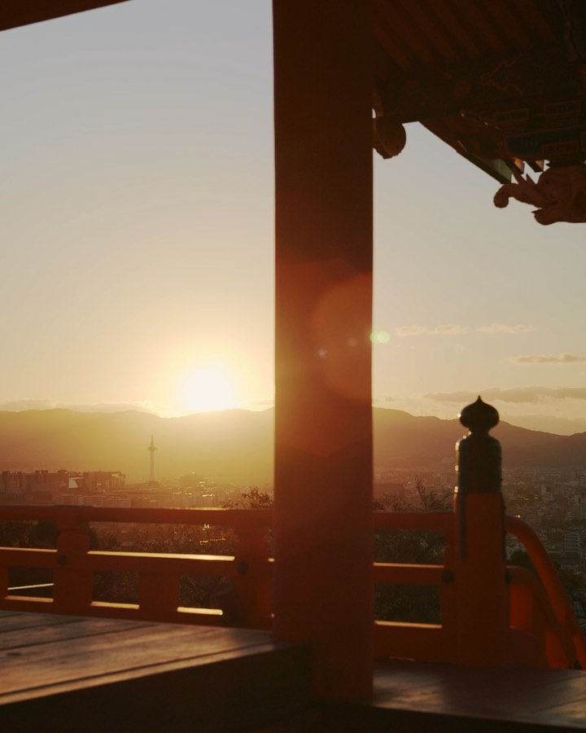
-
-
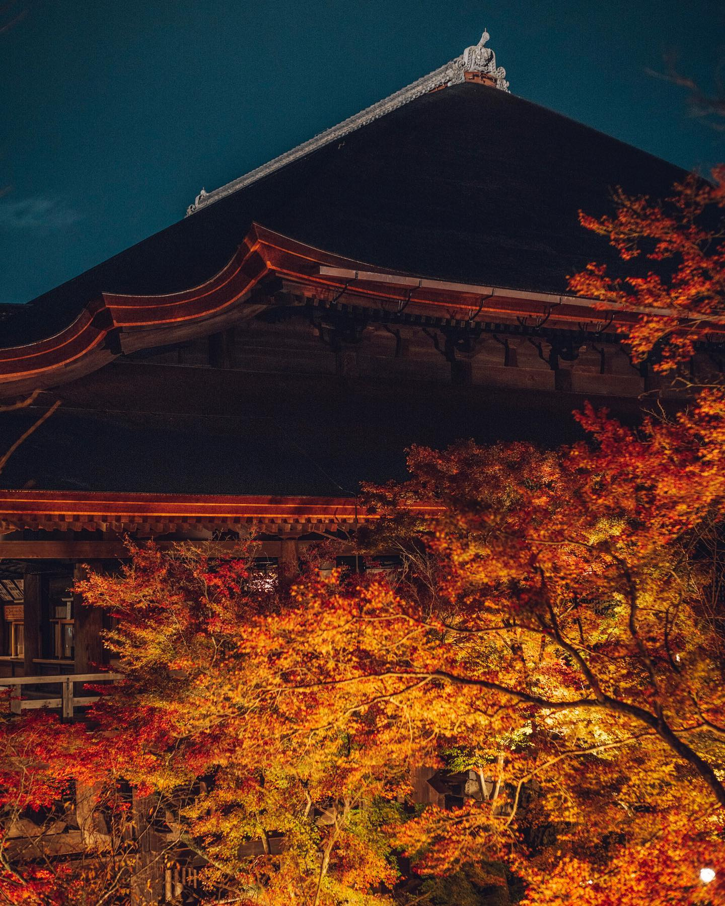
-
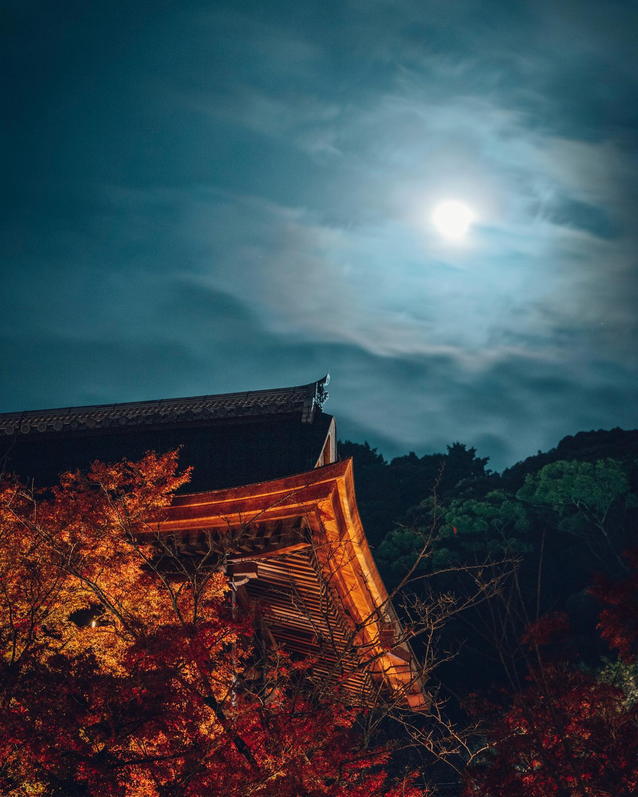
-
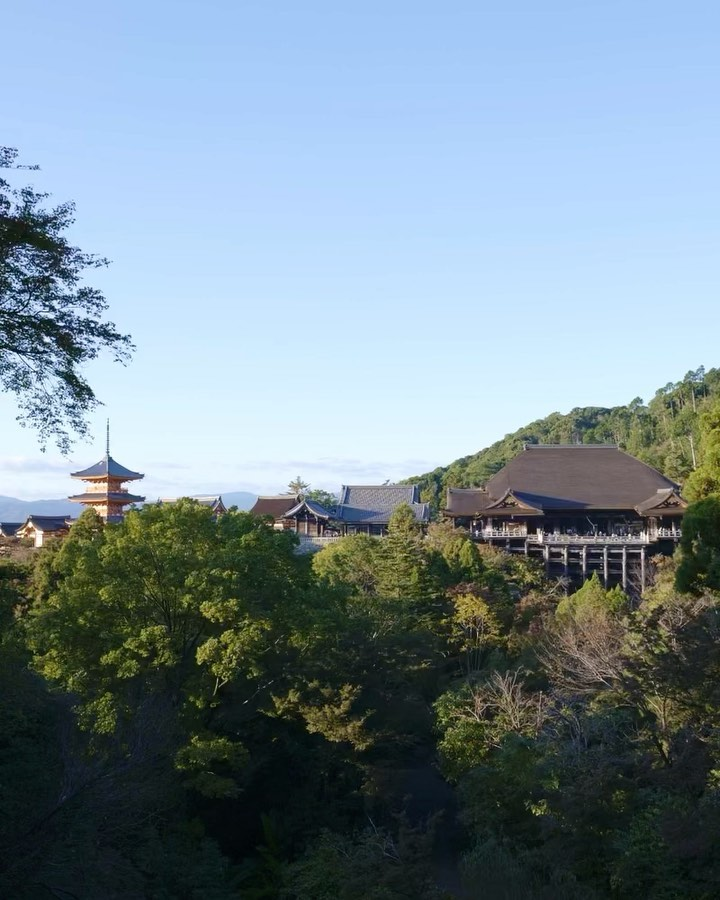
-
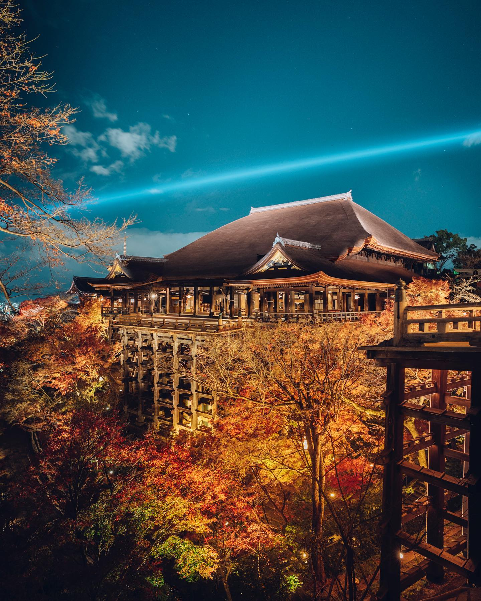
-
查看更多
景觀的過渡和區域的外觀。我會用照片告訴你音羽山的時代。請享受“現在的清水寺”。